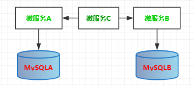
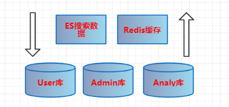

原文出处:本文由博客园博主知了一笑提供。
原文连接:https://www.cnblogs.com/cicada-smile/p/11780727.html
原文连接:https://www.cnblogs.com/cicada-smile/p/11780727.html
本文源码：GitHub·点这里 || GitEE·点这里
更新进度(共6节)：
03：数据库选型，业务数据设计规划
一、数据库选择
1、数据库分类
| 数据库类型 | 常见数据库 |
|---|---|
| 关系型 | MySQL、Oracle、DB2、SQLServer等。 |
| 非关系型 | Hbase、Redis、MongodDB等。 |
| 行式存储 | MySQL、Oracle、DB2、SQLServer等。 |
| 列式存储 | Hbase、ClickHouse等。 |
| 分布式存储 | Cassandra、Hbase、MongodDB等。 |
| 键值存储 | Memcached、Redis、MemcacheDB等。 |
| 图形存储 | Neo4J、TigerGraph等。 |
| 文档存储 | MongoDB、CouchDB等。 |
2、数据库选择
基于特定的应用环境，选择最适合的数据库，建立数据存储模式，使之能够有效地存储数据，满足各种用户的应用需求。例如：普通的业务库，数据量不大情况下选择MySQL;有频繁的搜索操作，可以使用ElasticSearch;系统存在大量热点数据，可以使用常见的缓存数据库等。
3、微服务数据库
微服务架构的一个关键点是数据库设计规划，基本原则是每个服务都有自己单独的数据库，而且只有微服务本身可以访问这个数据库。其他的服务要是想访问，只能通过调用该服务对外提供的接口进行操作，这样可以压缩数据库操作的接口，在问题排查和性能优化上都可以提供支持，这样也使系统的框架更具有条理。该模式图解如下：

微服务C通过微服务A操作数据库A，或者通过微服务B操作数据库B。
二、规划业务数据库
1、总体划分

主要使用三种数据存储：MySQL(划分三个业务库)，ElasticSearch(单台)，Redis(单台)。
2、用户库
(user-data)存储用户相关的数据结构，比如User信息，Token，操作日志等。
CREATE TABLE `hc_user_base` (
`id` int(11) NOT NULL AUTO_INCREMENT COMMENT '主键id',
`user_name` varchar(50) DEFAULT NULL COMMENT '用户名',
`pass_word` varchar(300) DEFAULT NULL COMMENT '加密密码',
`phone` varchar(30) DEFAULT NULL COMMENT '手机号',
`email` varchar(50) DEFAULT NULL COMMENT '邮箱',
`create_time` datetime DEFAULT NULL COMMENT '创建时间',
`update_time` datetime DEFAULT NULL COMMENT '更新时间',
`state` int(1) DEFAULT '0' COMMENT '状态:0可用,1禁用',
PRIMARY KEY (`id`)
) ENGINE=InnoDB DEFAULT CHARSET=utf8 COMMENT='用户表';3、管理系统库
(admin-data)存储后台微服务管理系统的支撑数据库，例如定时器，管理员权限，配置字典等。
-- 管理员列表
CREATE TABLE `hc_admin_user` (
`id` int(11) NOT NULL AUTO_INCREMENT COMMENT '主键id',
`user_name` varchar(50) DEFAULT NULL COMMENT '用户名',
`pass_word` varchar(300) DEFAULT NULL COMMENT '加密密码',
`phone` varchar(30) DEFAULT NULL COMMENT '手机号',
`email` varchar(50) DEFAULT NULL COMMENT '邮箱',
`create_time` datetime DEFAULT NULL COMMENT '创建时间',
`update_time` datetime DEFAULT NULL COMMENT '更新时间',
`state` int(1) DEFAULT '0' COMMENT '状态:0可用,1禁用',
PRIMARY KEY (`id`)
) ENGINE=InnoDB DEFAULT CHARSET=utf8 COMMENT='管理用户表';
-- 角色和权限列表
CREATE TABLE `hc_role_info` (
`id` int(11) NOT NULL AUTO_INCREMENT COMMENT '主键ID',
`role_name` varchar(64) DEFAULT NULL COMMENT '角色名称',
`role_auth` varchar(64) DEFAULT NULL COMMENT '角色权限',
`create_time` datetime DEFAULT NULL COMMENT '添加时间',
PRIMARY KEY (`id`)
) ENGINE=InnoDB DEFAULT CHARSET=utf8 COMMENT='系统角色表';
-- 定时器列表
CREATE TABLE `schedule_job` (
`id` bigint(20) NOT NULL AUTO_INCREMENT COMMENT '任务id',
`bean_name` varchar(200) DEFAULT NULL COMMENT 'spring bean名称',
`params` varchar(2000) DEFAULT NULL COMMENT '参数',
`cron_expression` varchar(100) DEFAULT NULL COMMENT 'cron表达式',
`status` tinyint(4) DEFAULT NULL COMMENT '任务状态 0：正常 1：暂停',
`remark` varchar(255) DEFAULT NULL COMMENT '备注',
`create_time` datetime DEFAULT NULL COMMENT '创建时间',
PRIMARY KEY (`id`)
) ENGINE=InnoDB DEFAULT CHARSET=utf8 COMMENT='定时任务';4、数据分析库
(report-data)存储数据归档的报表，分析结果等，案例主要演示把用户的搜索行为进行分析，存储到报表库。
-- 书籍搜索记录
CREATE TABLE `hc_search_book` (
`id` int(11) NOT NULL AUTO_INCREMENT COMMENT '主键ID',
`user_id` int(11) DEFAULT NULL COMMENT '用户ID',
`book_id` int(11) DEFAULT NULL COMMENT '书籍ID',
`book_name` varchar(100) DEFAULT NULL COMMENT '书籍名称',
`search_time` datetime DEFAULT NULL COMMENT '搜索时间',
PRIMARY KEY (`id`)
) ENGINE=InnoDB DEFAULT CHARSET=utf8 COMMENT='书籍被搜索记录';
-- 关键词搜索记录
CREATE TABLE `hc_search_key_word` (
`id` int(11) NOT NULL AUTO_INCREMENT COMMENT '主键ID',
`user_id` int(11) DEFAULT NULL COMMENT '用户ID',
`key_word` varchar(50) DEFAULT NULL COMMENT '关键词',
`search_num` int(11) DEFAULT NULL COMMENT '搜索次数',
PRIMARY KEY (`id`)
) ENGINE=InnoDB DEFAULT CHARSET=utf8 COMMENT='关键词搜索记录';5、搜索引擎库
(es-data)存储用户的搜索数据，可以基于MySQL库动态实时的导入到ES服务。
-- 书籍搜索信息表
CREATE TABLE `hc_book_info` (
`id` int(11) NOT NULL AUTO_INCREMENT COMMENT '主键ID',
`book_name` varchar(100) DEFAULT NULL COMMENT '书籍名称',
`book_author` varchar(100) NOT NULL DEFAULT '0' COMMENT '作者',
`book_desc` varchar(200) DEFAULT NULL COMMENT '简介',
`book_press` varchar(100) NOT NULL DEFAULT '0' COMMENT '出版社',
`create_time` datetime DEFAULT NULL COMMENT '创建时间',
`update_time` datetime DEFAULT NULL COMMENT '更新时间',
`state` int(1) DEFAULT '0' COMMENT '状态：0可用,1删除',
PRIMARY KEY (`id`)
) ENGINE=InnoDB DEFAULT CHARSET=utf8 COMMENT='书籍信息表';三、数据库设计总结
数据库设计是微服务设计的一个核心点，基本原则是每个微服务都有自己单独的数据库，而且只有微服务本身可以访问这个数据库。在微服务架构中，数据库设计首先要满足用户的需求，便于维护和扩展，具有很好的读写性能，还可以帮助开发人员理解和管理系统。
四、源代码地址
GitHub·地址
https://github.com/cicadasmile/husky-spring-cloud
GitEE·地址
https://gitee.com/cicadasmile/husky-spring-cloud：数据库选型简介，业务数据规划设计2.png)